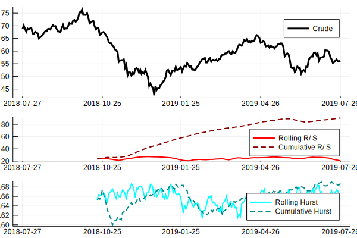

Chaos Theory / Fractals
Example
using Temporal, Indicators, Plots
X = quandl("CHRIS/CME_CL1", rows=252, sort='d')
x = cl(X)
x.fields[1] = :Crude
r = [rsrange(x, n=60) rsrange(x, n=60, cumulative=true)]
r.fields = Symbol.(["Rolling R/S", "Cumulative R/S"])
h = [hurst(x, n=60) hurst(x, n=60, cumulative=true)]
h.fields = Symbol.(["Rolling Hurst", "Cumulative Hurst"])
f1 = plot(x, linewidth=3, color=:black)
f2 = plot(r, linewidth=2, color=[:red :darkred], linestyle=[:solid :dash])
f3 = plot(h, linewidth=2, color=[:cyan :darkcyan], linestyle=[:solid :dash])
plot(f1, f2, f3, layout=@layout[a{0.5h}; b{0.25h}; c{0.25h}])/home/travis/.julia/packages/GR/TMylY/src/../deps/gr/bin/gksqt: error while loading shared libraries: libQt5Widgets.so.5: cannot open shared object file: No such file or directory
connect: Connection refused
GKS: can't connect to GKS socket application
Did you start 'gksqt'?
GKS: Open failed in routine OPEN_WS
GKS: GKS not in proper state. GKS must be either in the state WSOP or WSAC in routine ACTIVATE_WS
Reference
modules = [Indicators]
pages = ["chaos.jl"]